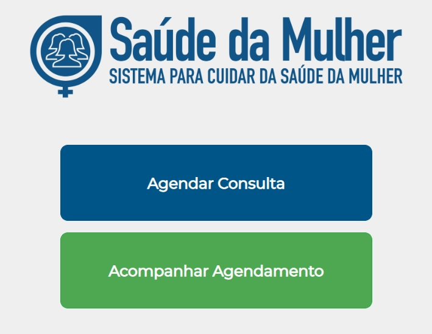

Toda mulher tem direito a exames como o papanicolal (exame que detecta o câncer no colo do útero) ao rastreamento e tratamento de cancer de mama e colo do útero a mamografia, a cirurgia para colocar próteses de silicone depois de uma mastectomia.
O cuidado com a promoção à saúde em todas as fases da vida é essencial na prevenção das Doenças Crônicas Não Transmissiíveis (DCNTS), como diabetes, hipertensão e obesidade.
O procedimento é indicado para mulheres que tenham entre 25 e 64 anos. Pacientes de outras idades que já tenham iniciado a vida sexual também podem agendar o exame. Para agendar o exame de preventivo a paciente deverá acessar o link abaixo. Basta preencher o cadastro e buscar a data, horário e local desejado para fazer a coleta
Além disso tem direito ao planejamento familiar, tendo acesso a informações sobre métodos e técnicas para prevenção da gravidez. O SUS oferece contraceptivos como DIU, anticoncepcionais e camisinha feminina. Já no caso das gestantes, a realização do pré-natal, incluindo acompanhamento durante toda a gravidez e puerpério, também é uma garantia do SUS.
Durante a gestação devem ser realizados exames, consultas e orientações na Unidade Básica de Saúde e, em casos de gravidez de risco, em maternidades ou centros de referência. O acompanhamento é importante para detectar doenças que possam afetar o desenvolvimento do bebê, a saúde da mulher e também para orientar a mãe sobre o aleitamento materno, vacinas e cuidados com a criança.
As gestantes também têm direito a um acompanhante de sua indicação durante o período de trabalho de parto, parto e pós-parto. A atenção integral e humanizada ao recém-nascido prevê o contato imediato do bebê com o abdômen ou tórax da mãe (de acordo com a vontade dela) e o estímulo à amamentação ainda na primeira hora de vida
O serviço de saúde público também acolhe mulheres vítimas de violência, sejam elas crianças, adolescentes, adultas ou idosas. Nestes casos, elas devem procurar o SUS para receber atendimento humanizado e encaminhamento adequado nas unidades de saúde. Nesses espaços, as mulheres têm acesso a profilaxia pós-exposição, a pílula do dia seguinte e a orientações, em caso de gestação indesejada. O atendimento acontece sem exigência do boletim de ocorrência.
A partir da Política Nacional de Atenção Integral à Saúde da Mulher são ofertadas ações educativas a vacinas; do planejamento reprodutivo a disponibilização dos métodos contraceptivos; do pré-natal, parto ao puerpério; do incentivo a hábitos saudáveis aos exames preventivos; dos cuidados da saúde da adolescente aos cuidados à saúde da mulher idosa.
Nas Unidades Básicas de Saúde, toda mulher idosa tem direito ao acesso e à avaliação integral da sua saúde, com atendimento multiprofissional e olhar multidimensional (clínico, psicossocial e funcional) para elaboração do seu plano de cuidado.
Para mulheres com vida sexual ativa, é essencial eleger corretamente métodos de prevenção de doenças e de contracepção. O uso de preservativo ainda é o método mais eficaz para prevenir infecções sexualmente transmissíveis (ISTs). Também é indispensável ter atenção aos relacionamentos e fazer testes frequentes quanto a essas doenças.
Poucas pessoas sabem, mas Campo Grande tem o Centro de Testagem e Aconselhamento (CTA) da Capital. Funcionando de segunda a sexta, das 07h às 17h, sem horário de almoço e por demanda espontânea, o espaço recebe mensalmente, mais de 600 pessoas, sendo 400 homens, 200 mulheres e 15 pessoas trans.
No local é possível ter acesso aos testes rápidos para HIV, sífilis, hepatite B e C e todo o atendimento demora, em média, 30 minutos. Dividido em cadastro, onde é necessário portar documento com foto e cartão dos SUS; triagem, para entender os níveis de exposição a doença; teste sanguíneo e aconselhamento, para sanar dúvidas, tanto do procedimento quanto das práticas sexuais.
Outra preocupação do Centro de Testagem e Aconselhamento de Campo Grande, é o apoio aos profissionais do sexo. Grupo, que em determinados espaços não se sentem acolhidos e respeitados. Pensando nisso, através de projetos, é disponibilizado exames e tratamento do HPV, Preventivo e outros acompanhamentos que essa categoria possa precisar.
Endereço: R. Anhanduí, 353 - Vila Carvalho, Campo Grande - MS, 79005-051 Telefone: (67) 2020-1701Você sabia que os cuidados com a saúde da mulher só foram inseridos nas políticas nacionais de saúde nas décadas iniciais do século XX? Antes disso, a temática ficou restrita quase que exclusivamente às questões relacionadas à gestação e aos partos.
Mas, em meados dos anos 1950, outras medidas começaram a ganhar nova proporção, como o combate à desnutrição e os cuidados com o planejamento familiar. Ao final da década de 1970, a assistência materno-infantil cresceu bastante, com atenção aos cuidados ao período anterior à concepção do bebê e bem-estar da mãe.
Nos anos posteriores, foram adotadas novas diretrizes para grupos vulneráveis e atendimento a outras exigências, como sobre os direitos sexuais e reprodutivos. Atualmente existem planos e instruções claras para o rastreamento de diversas doenças (como o câncer de mama ou o câncer do colo do útero), além de boas práticas para dar liberdade de escolha e autonomia sobre o próprio corpo.